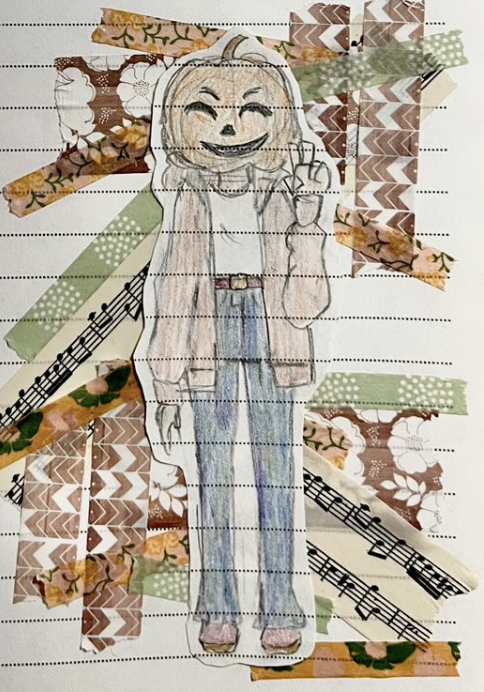
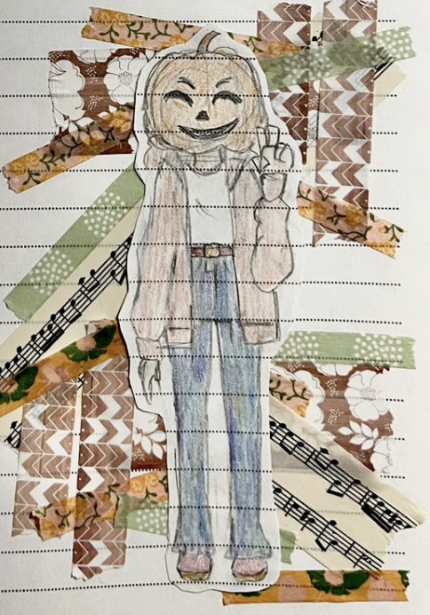
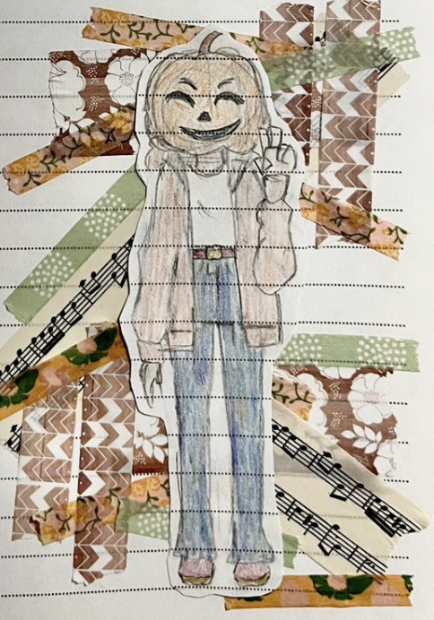

The below images were all created by me using a variety of mediums. The most common you'll find are digital works made with programs like Procreate, ibisPaint, and MedibBang Paint. You'll also find traditional works, such as acrylic paintings, pencil sketches, marker drawings, and collages. Overall, you'll find quite a few of my favorite works in this gallery.
Hint: If you click and hold on some of the images, the full image will be revealed!
